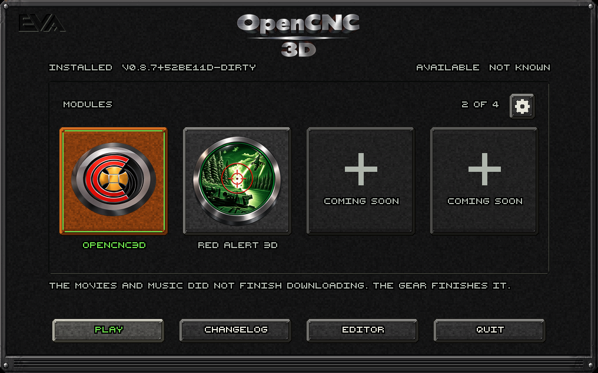

Actual native CPU render. A soft green scan beam, faint phosphor rows and brief packet interference loop over sixteen seconds. Preview sampled at 10 Hz; launcher renders at 30 Hz. Lettering, module emblems, fittings and interaction geometry remain steady.
